1. 概要
Hokulele（ホクレレ）は、流星の動画観測データから流星スペクトルの測光・解析を行う GUI ソフトウェアです。回折格子を取り付けたカメラで撮影した流星動画から、0次像（流星本体）の光度曲線、1次像（スペクトル）の波長較正・感度補正・フィルター合成測光、さらに恒星マッチングによる位置較正を利用した放射点・軌道の推定までを一貫して実行できます。
本書は Hokulele V2.5.1 の使用マニュアルです。実際の画面のスクリーンショットを用いて、動画の読み込みから各解析・出力までの操作を順に説明します。画面例にはサンプル動画 sample_synthetic_meteor.avi（960×480, 30fps, 60フレーム、フレーム 10〜49 に流星）を使用しています。
1.1 主な機能
カラー / 白黒の動画（AVI, MP4, MOV 等）および連番画像（8/16bit）の読み込み（ffmpeg 不要）
γ補正 13 種（RAW, γ=1, 0.35, 0.45, 1/1.9, 1/2.2, 1/2.4, BT.709, S-Log2, S-Log3, HLG, Canon Log, V-Log）— 対応カメラ機種名つき
ダーク補正（動画内フレーム範囲 / 外部ファイル）とフラット補正
歪み補正（plate constant）: 同心円チャート計測、または astrometry.net による恒星マッチング
0次像の自動追跡＋開口測光（光度曲線）
1次像の波長較正・感度補正（3 方式）・UBVRI / SDSS ugriz / カスタムフィルター合成測光
見かけ放射点・対地速度・日心軌道要素の推定（単点観測・高度仮定）
合成スペクトル画像（比較明 / 加算平均）の FITS / PNG / JPEG 出力
マウス追従ルーペ、プレビュー再生、キーボードショートカット、プロジェクト設定 JSON、解析結果ログ
分光解析デモ: サンプル動画を使い、解析手順を 1 ステップずつ実演
表示言語の切替（日本語 / English）
1.2 V2.5 での変更点
日本語 / English の切替: 画面・メッセージ・出力ファイルの見出しを英語でも表示できるようになりました。メニューバーの「言語 / Language」で切り替えます（2.6 節）。
配布先の変更: 配布ページを https://github.com/nu-sx/hokulele に移しました。分光解析デモのデータもこのページから取得します。
英語版マニュアル: 英語版の使用マニュアル（Hokulele_Manual_en.docx）を同梱しました。
アイコン（V2.5.1）: しし座としし座流星群の流星、0次像・1次像と流星スペクトルを描いたアイコンに変更しました。
1.3 V2.4 での変更点
Windows 11 / macOS 版を公開: Python を用意しなくても、インストーラ（Windows）または dmg（macOS）からインストールして使えるようになりました（第 2 章）。
分光解析デモ: 動画タブの「デモを開始」で、サンプル動画を GitHub から取得し、読み込みから 1 次像のスペクトル測光までを実演します（4.1 節）。
負のカウントの扱い: 感度補正前に負のカウントを 0 にしていたため、低 S/N では強度が正に偏っていました。既定で切り捨てないようにし、旧挙動は 1次像タブの「負のカウントを0に切り捨てる」で選べます。
不具合修正: 歪み係数ファイル（V0.971 形式）の 4 番目の値を水平画角として正しく読むように修正、感度曲線の G→R チャンネル切替点の判定を V0.971 と同じ方法に修正、入射角を 0次光位置の画像中心からの距離で計算するよう修正しました。
グラフの日本語表示: グラフのタイトルなどの日本語が □ で表示される問題を修正しました。
1.4 引用と謝辞
Hokulele を使った研究成果を論文などで発表する際は、次の論文を引用し、謝辞に Hokulele を使用したことを記載してください。
引用文献
Abe, S., Ogawa, T., Maeda, K., & Arai, T. (2020). Sodium variation in Geminid meteoroids from (3200) Phaethon. Planetary and Space Science, 194, 105040. https://doi.org/10.1016/j.pss.2020.105040
謝辞の例（英文）
This research made use of Hokulele, a meteor spectroscopy analysis software (Abe et al., 2020).
謝辞の例（和文）
本研究では流星分光解析ソフトウェア Hokulele（Abe et al., 2020）を使用した。
2. 動作環境とインストール
2.1 動作環境
| OS | 条件 |
|---|---|
| Windows | Windows 10 / 11（64bit） |
| macOS | macOS 12 以降、Apple シリコン（M1 以降）の Mac。Intel Mac には対応していません |
分光解析デモと恒星マッチング（astrometry.net）にはインターネット接続が必要です。
2.2 ダウンロード
次のページの「Releases」から、お使いの OS 用のファイルをダウンロードします。
https://github.com/nu-sx/hokulele/releases
| OS | ファイル名 |
|---|---|
| Windows 10 / 11 | Hokulele-2.5.1-Windows-x64-Setup.exe（インストーラ） |
| macOS | Hokulele-2.5.1-macOS-arm64.dmg |
| 使用マニュアル | Hokulele-2.5.1-Manual-ja.docx（日本語）/ Hokulele-2.5.1-Manual-en.docx（English） |
同じページの SHA256SUMS.txt に各ファイルのチェックサムが記載されています。ダウンロードしたファイルが壊れていないか確かめるときに使います。
2.3 Windows へのインストール
Hokulele-2.5.1-Windows-x64-Setup.exe をダブルクリックします。
「Windows によって PC が保護されました」と表示された場合は、「詳細情報」→「実行」を押します（コード署名をしていないため表示されます）。
画面の指示に従ってインストールします。インストール先は既定でユーザーのフォルダです。デスクトップにアイコンを作るかどうかを選べます。
スタートメニューの「Hokulele」から起動します。同じフォルダに使用マニュアル（日本語 / English）とサンプル・資料フォルダへのショートカットがあります。
アンインストールは「設定」→「アプリ」→「インストールされているアプリ」の Hokulele から行います。
2.4 macOS へのインストール
Hokulele-2.5.1-macOS-arm64.dmg をダブルクリックして開きます。
Hokulele.app を、同じウィンドウ内の「Applications」フォルダへドラッグします。
「アプリケーション」フォルダの Hokulele を開きます。
初回に「開発元を確認できないため開けません」と表示された場合は、「システム設定」→「プライバシーとセキュリティ」を開き、下の方にある「このまま開く」を押します（Apple の公証を受けていないため表示されます）。
dmg には、はじめにお読みください（日本語 / English）・サンプル動画・使用マニュアル（日本語 / English）も入っています。
2.5 起動と終了
起動すると図1のメインウィンドウが開きます。終了するときはウィンドウを閉じ、確認ダイアログで「OK」を押します。
2.6 表示言語（日本語 / English）
Hokulele は日本語と英語で表示できます。初回起動時は OS の表示言語に合わせて自動的に選ばれます。
メニューバーの「言語 / Language」を開きます（macOS では画面上部のメニューバー、Windows ではウィンドウ上部にあります）。
「日本語」または「English」を選びます。
「今すぐ再起動しますか？」と聞かれるので、「はい」を押すと Hokulele が再起動して新しい言語で表示されます。「いいえ」を押した場合は、次回の起動から反映されます。
切り替えるのは画面の表示だけです。解析の方法と結果の数値は言語によって変わりません。
英語表示では、出力テキストの見出し行・解析ログ・軌道レポートも英語になります。
設定はホームフォルダの Hokulele_data/hokulele_settings.json に保存されます。
※ 再起動すると、それまでの解析状態は破棄されます。必要なら先に「設定を保存 (JSON)」でプロジェクト設定を保存してください。
2.7 データの保存先
解析結果は「測光データ保存先」（動画タブで設定）の下の「動画名_result」フォルダに出力されます。
分光解析デモのデータと結果は、ホームフォルダの Hokulele_data/demo に保存されます。不要になったら削除してかまいません。
3. 画面構成と基本操作
3.1 メインウィンドウ
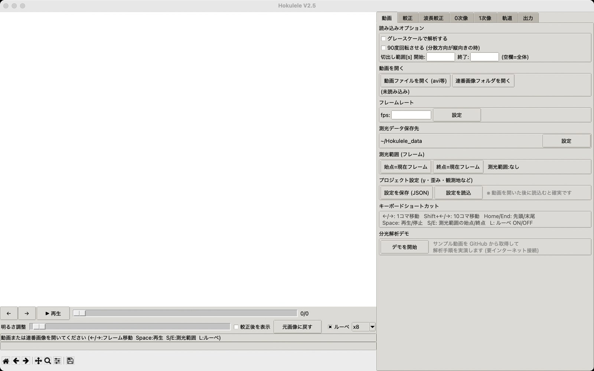
メインウィンドウは左右 2 ペインで構成されます。左側が画像表示部、右側が解析タブ（動画 / 較正 / 波長較正 / 0次像 / 1次像 / 軌道 / 出力）です。
| 領域 | 内容 |
|---|---|
| 画像表示部 | 現在フレームまたは合成画像を表示。クリックで各種計測（チャート交点・輝線・0次像位置など）を行う |
| フレーム操作列 | ← / → ボタン、▶ 再生ボタン、フレームスライダー、フレーム番号と経過時刻 [s] |
| 表示調整列 | 明るさ調整スライダー、「較正後を表示」、「元画像に戻す」、「ルーペ」チェックと倍率（x4/x8/x16） |
| ステータスバー | 処理の進捗や次に行う操作のガイドを表示 |
| 画素値バー | マウス位置の X, Y 座標と輝度値（カラーは R, G, B、白黒は Count） |
| ツールバー（最下段） | matplotlib 標準のホーム・戻る/進む・パン・ズーム・余白調整・画像保存 |
| 解析タブ（右側） | 解析の各段階の設定と実行ボタン |
3.2 ルーペ（マウス追従拡大鏡）
画像上でマウスを動かすと、カーソル位置周辺を拡大した小ウィンドウ（ルーペ）がカーソルの右下に表示されます（図2）。淡い流星像の確認や、チャート交点・輝線・0次像位置を 1 ピクセル精度でクリックするのに便利です。
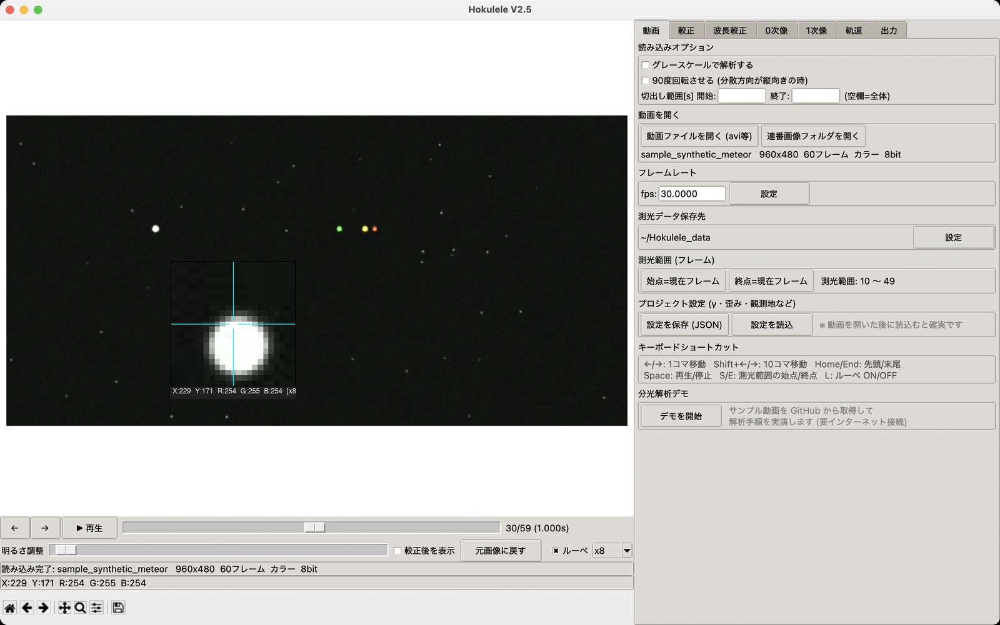
中心の十字線が注目画素（クリックされる画素）です。下部に座標・輝度値・倍率が表示されます。
画面の右端・下端では自動的に反対側へ回り込みます。
倍率は表示調整列のコンボボックスで x4 / x8 / x16 を選択。ON/OFF は「ルーペ」チェックまたは L キー。
※ ルーペは表示中の画像（明るさ調整・較正後表示を反映）を拡大します。輝度値の数値はガンマ補正前の生カウントです。
3.3 プレビュー再生
▶ 再生ボタン（または Space キー）で現在フレームから動画を再生します。再生中はボタンが ■ 停止 に変わり、最終フレームで自動停止します。
3.4 キーボードショートカット
| キー | 動作 |
|---|---|
| ← / → | 1 フレーム戻る / 進む |
| Shift + ← / → | 10 フレーム戻る / 進む |
| Home / End | 先頭 / 最終フレームへ |
| Space | プレビュー再生 / 停止 |
| S / E | 測光範囲の始点 / 終点 = 現在フレーム |
| L | ルーペの ON / OFF |
※ 文字入力欄にカーソルがある間はショートカットは無効です。画像やスライダーをクリックしてから操作してください。
4. 解析の流れ（クイックスタート）
4.1 分光解析デモで手順を体験する
初めて使うときは、分光解析デモで解析の流れを確認するのがおすすめです。サンプル動画を使い、動画の読み込みから 1 次像のスペクトル測光と結果の表示までを、実際の画面操作と同じ手順で実演します。
動画タブの一番下にある「分光解析デモ」の「デモを開始」を押します。図3のデモウィンドウが開きます。
「次へ ▶」を押すと 1 ステップずつ進みます。各ステップの説明がウィンドウ下部に表示され、メインウィンドウでは対応するタブが開いて操作が行われます。クリック位置は水色の × で表示されてから確定します（図4）。
「最後まで自動実行」を押すと、残りのステップを続けて実行します。
全ステップが終わると、各ステップに「✓ 完了」が付きます（図5）。「結果フォルダを開く」で、スペクトルのテキストや解析ログを確認できます。
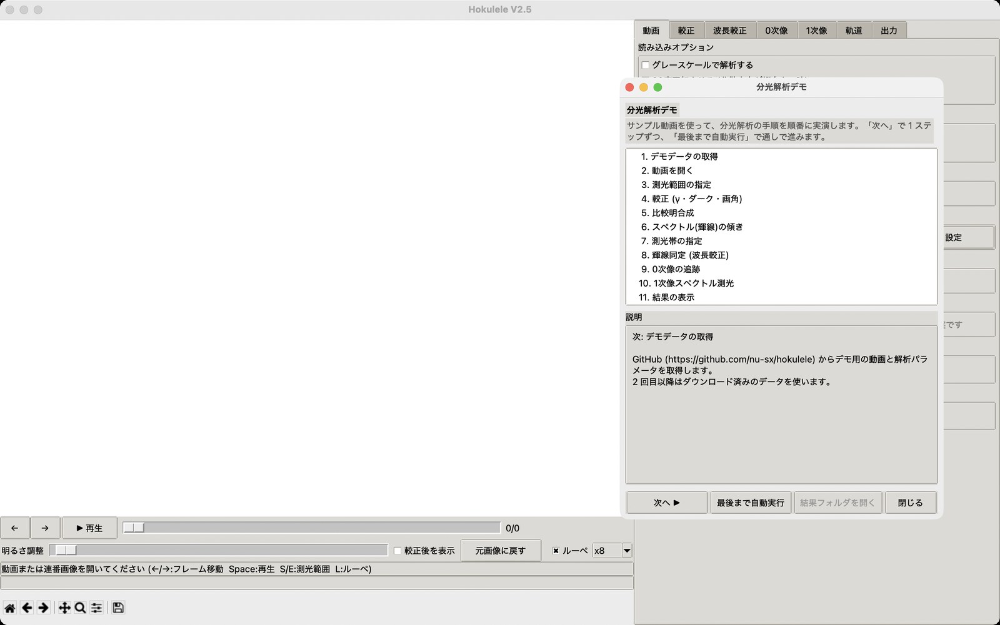
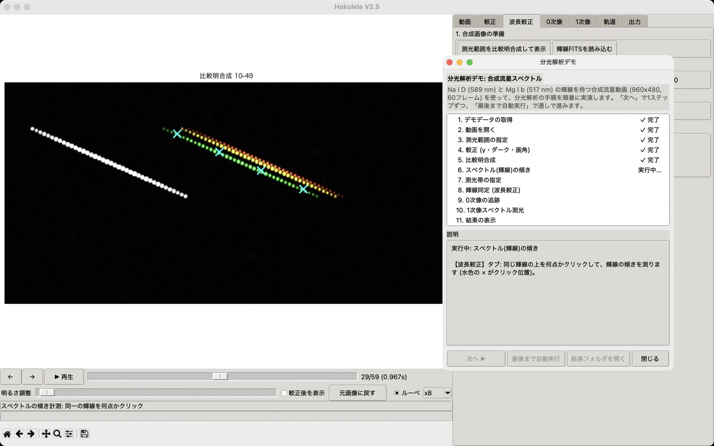
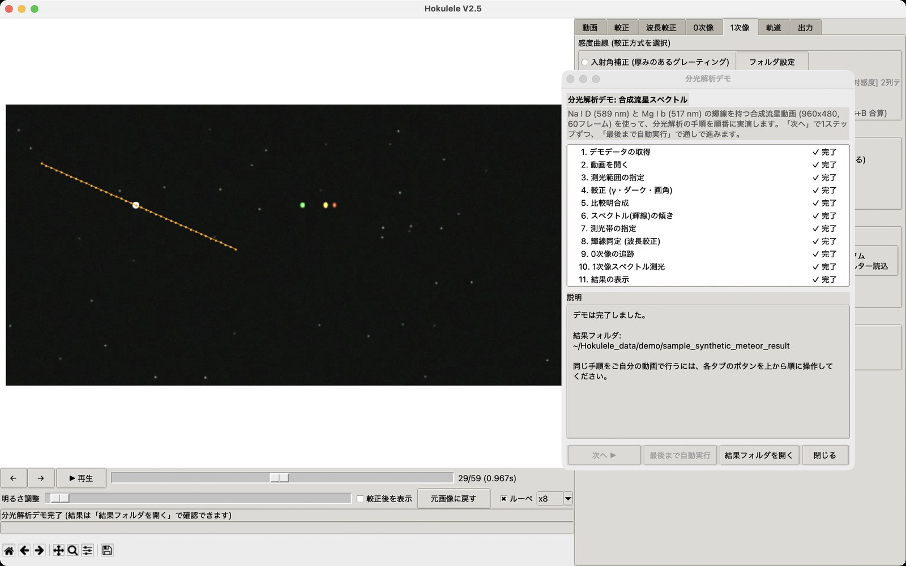
| ステップ | 内容 |
|---|---|
| 1. デモデータの取得 | GitHub（nu-sx/hokulele）からサンプル動画と解析パラメータを取得。2 回目以降は保存済みのデータを使う |
| 2〜3. 動画・測光範囲 | 動画を開き、測光範囲をフレーム 10〜49 に設定 |
| 4. 較正 | γ = RAW、ダーク = フレーム 0〜8、水平画角 60° |
| 5〜8. 波長較正 | 比較明合成、輝線の傾き、測光帯、輝線同定（Na I D 589.16 nm, Mg I b 517.27 nm） |
| 9. 0次像の追跡 | 流星本体を自動追跡して開口測光 |
| 10〜11. 1次像 | 感度補正なし、B・V・R で合成測光し、光度曲線と平均スペクトルを表示 |
※ デモにはインターネット接続が必要です（初回のみ約 1 MB をダウンロード）。デモを開始すると、それまでの解析状態は破棄されます。デモの結果はホームフォルダの Hokulele_data/demo に保存されます。
4.2 解析の手順
標準的な解析手順は次のとおりです。各手順の詳細は第 5 章を参照してください。
【動画タブ】読み込みオプションを設定してから動画（または連番画像）を開き、fps と保存先を確認する。
【動画タブ】流星が写っているフレーム範囲を測光範囲として設定する（S / E キーでも可）。
【較正タブ】撮影カメラに合わせてガンマ補正を選択する（第 6 章参照）。
【較正タブ】ダークとフラットを設定する。
【較正タブ】歪み補正（チャート計測または恒星マッチング）と水平画角を設定する。軌道推定には恒星マッチングが必須。
【較正タブ】回折格子の傾き（分散軸）を計測する。
【波長較正タブ】比較明合成 → スペクトルの傾き → 測光帯 → 輝線同定で波長較正する。
【0次像タブ】流星本体をクリックして自動追跡＋開口測光を実行し、光度曲線を保存する。
【1次像タブ】感度曲線とフィルターを設定して測光を実行する。
【軌道タブ】観測地・UTC 時刻・高度仮定を入力して放射点・軌道要素を推定する。
【出力タブ】合成スペクトル画像を FITS / PNG / JPEG で保存する。
【動画タブ】「設定を保存 (JSON)」でプロジェクト設定を保存し、次回の解析で再利用する。
5. 各タブの操作
5.1 動画タブ
読み込みオプション
グレースケールで解析する: カラー動画を輝度のみで解析します。
90 度回転させる: 分散方向が縦向きの動画を横向きに直します（分散軸は水平が前提）。
切出し範囲 [s]: 長い動画の一部だけを読み込みます（空欄で全体）。
※ これらのオプションは動画を開く前に設定してください。
動画を開く
「動画ファイルを開く (avi等)」で AVI / MP4 / MOV / MKV / WMV / M2TS 等を、「連番画像フォルダを開く」で連番静止画（16bit TIFF/PNG 含む）を読み込みます。読み込み後、ファイル名・解像度・フレーム数・カラー/グレー・ビット深度が表示されます（図6）。
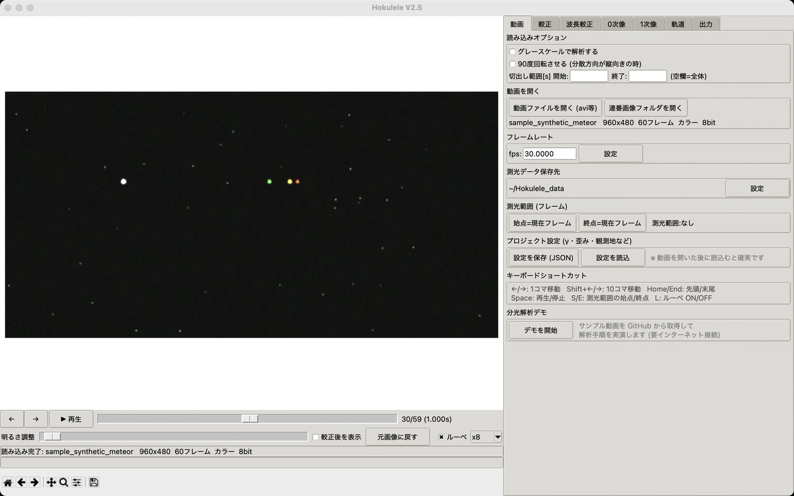
フレームレート・保存先
fps は動画から自動取得されます。連番画像や正確な値が分かっている場合は手入力して「設定」を押してください。fps は光度曲線の時刻と軌道推定の速度に直接影響します。解析結果は「測光データ保存先/動画名_result/」フォルダに出力されます。
測光範囲（フレーム）
流星が写っているフレーム範囲を指定します。スライダー（または ← / →）で流星の出現フレームへ移動して「始点=現在フレーム」、消滅フレームへ移動して「終点=現在フレーム」を押します（S / E キーでも可）。設定した範囲が右側に表示されます（図7）。
プロジェクト設定の保存 / 読込
「設定を保存 (JSON)」でガンマ設定・保存先・感度曲線・測光範囲・fps・歪み係数・回折格子の傾き・観測地・読み込みオプションを JSON に保存します。「設定を読込」で復元できます（動画を開いた後に読み込むと確実です）。
※ ダーク/フラットのファイル指定と波長較正は含まれません。波長較正は波長較正タブの「較正保存 / 較正読込」を利用してください。
分光解析デモ
「デモを開始」で分光解析デモを始めます（4.1 節）。
5.2 較正タブ
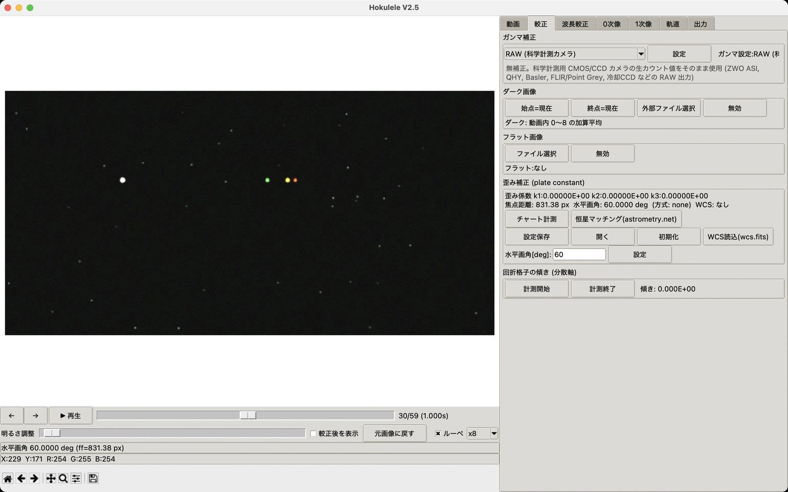
ガンマ補正
プルダウンから撮影カメラに対応する設定を選び「設定」を押します。選択すると下部に対応カメラ機種の説明が表示されます。詳細は第 6 章を参照してください。
ダーク画像
動画内から生成: 流星が写る前のフレームへ移動して「始点=現在」「終点=現在」を押すと、その範囲の加算平均がダークになります（夜空の背景も同時に差し引かれます）。
外部ファイル選択: 本ソフトの出力 FITS を推奨（PNG/TIFF 等も可）。
無効: ダーク補正を解除します。
フラット画像
最大値を 1 に正規化した FITS を推奨します（出力タブの「最大値を1として出力する」で作成できます）。
歪み補正（plate constant）
Brown モデル r_obs = r_true (1 + k1 r² + k2 r⁴ + k3 r⁶) による半径方向の歪み補正です。現在の係数・焦点距離・水平画角・方式・WCS の有無が枠の上部に表示されます。
チャート計測: 同心円チャートを撮影した画像で「チャート計測」を押すと、図9の小ウィンドウが開きます。円と放射線の交点を中心に近い円から順にクリックし（クリック点は水色の × で表示）、円ごとに「次の円へ」、最後に「計測終了」を押すと k1, k2, k3 がフィットされます（4 円以上必要）。この方式では水平画角 [deg] を手入力して「設定」を押してください。
恒星マッチング(astrometry.net): ボタンを押すと図10のダイアログが開きます。API キー（nova.astrometry.net → My Profile → API key）を入力し「プレートソルブ実行」を押すと、比較明合成（または現在フレーム）をプレートソルブし、WCS から焦点距離・歪み係数・水平画角を自動設定します。WCS は軌道推定にも使われます。
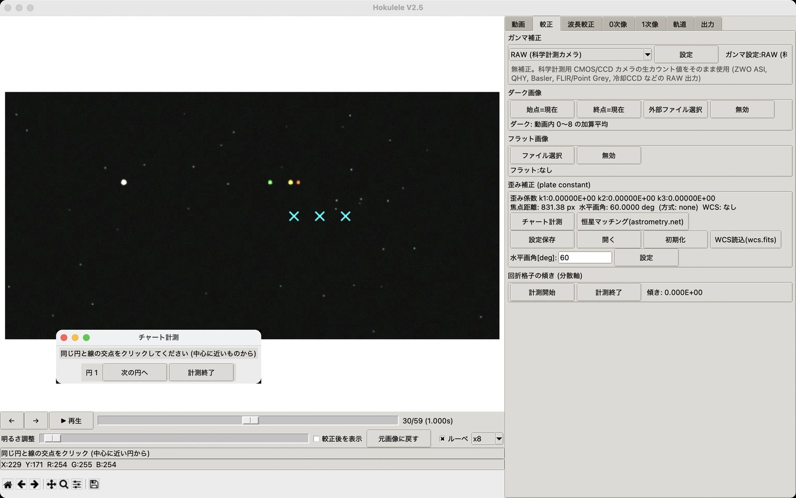
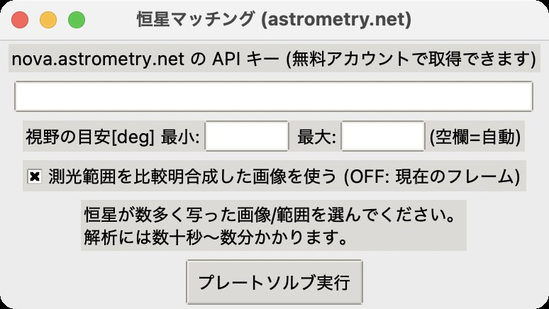
計測結果は「設定保存」「開く」で V0.971 互換のテキスト（k1, k2, k3, ff）として保存・再利用できます。「初期化」で係数をリセット、「WCS読込(wcs.fits)」で保存済み WCS を読み込みます。
回折格子の傾き（分散軸）
「計測開始」を押し、同一スペクトルの中心線上の特徴点を数点クリックして「計測終了」を押すと、分散軸の傾きが直線フィットで求まります。
5.3 波長較正タブ（輝線同定）
手順 1: 合成画像の準備
「測光範囲を比較明合成して表示」を押すと、測光範囲のフレームを比較明合成した画像が表示されます（図11）。白い列が 0 次像（流星本体）の軌跡、右側の色付きの列が 1 次スペクトルの輝線です。撮影済みの輝線ランプ画像を使う場合は「輝線FITSを読み込む」を押します。
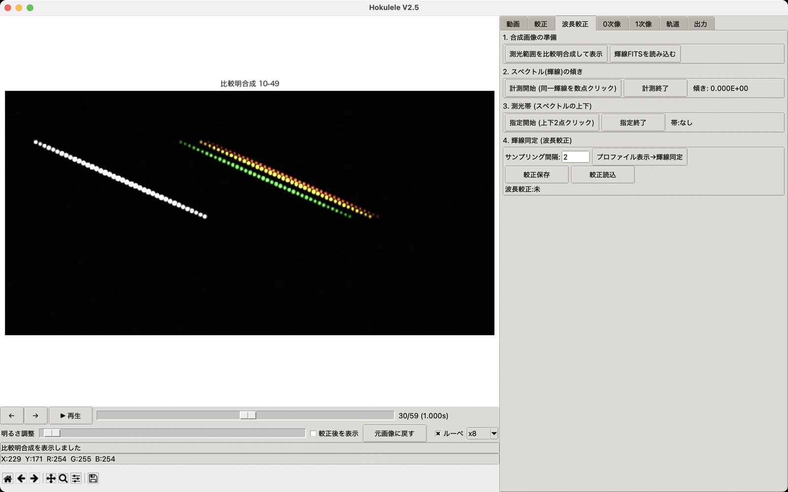
手順 2: スペクトル（輝線）の傾き
「計測開始 (同一輝線を数点クリック)」を押し、同じ輝線の軌跡上を数点クリックして（図12の水色 ×）「計測終了」を押します。傾きが右側に表示されます。
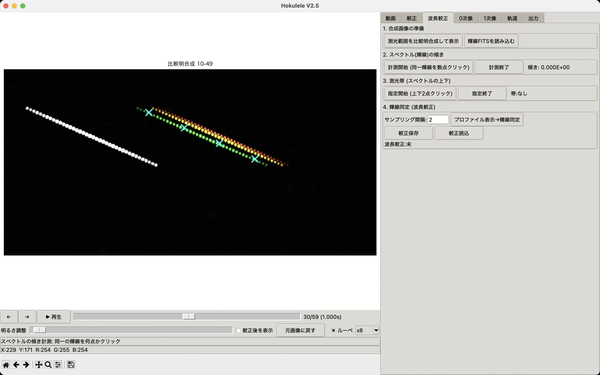
手順 3: 測光帯
「指定開始 (上下2点クリック)」を押し、スペクトル像の上端と下端を余裕をもって 2 点クリックして（図13）「指定終了」を押します。
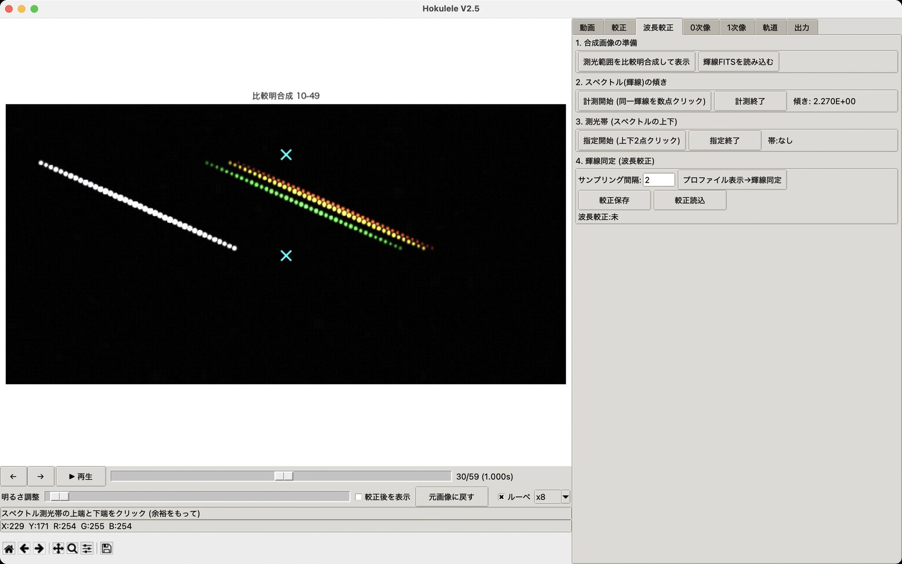
手順 4: 輝線同定
「プロファイル表示→輝線同定」を押すと、図14の輝線同定ウィンドウが開きます。グラフは測光帯内のピクセル位置ごとのカウントです（左の大きなピークが 0 次像）。
グラフ上のピークをクリックすると、近くの極大へ自動スナップして赤い点が付きます（≪ < > ≫ ボタンで微調整）。
「波長[nm]」欄に波長を入力するか、右のプルダウン（参考輝線）から選びます。
「波長設定 (このピーク)」を押すと較正点として登録され、緑の縦線と波長が表示されます。誤った点は「1点削除」で取り消せます。
2 点以上（推奨 4 点以上）登録したら「波長較正 (フィット)」を押します。4 点以上で二次式 λ = ax² + bx + c、2〜3 点は一次式でフィットされ、横軸が波長 [nm] に切り替わります（図15）。
「測定終了」でウィンドウを閉じます。
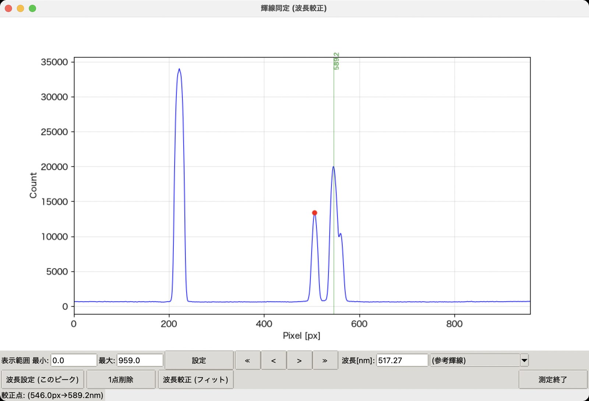
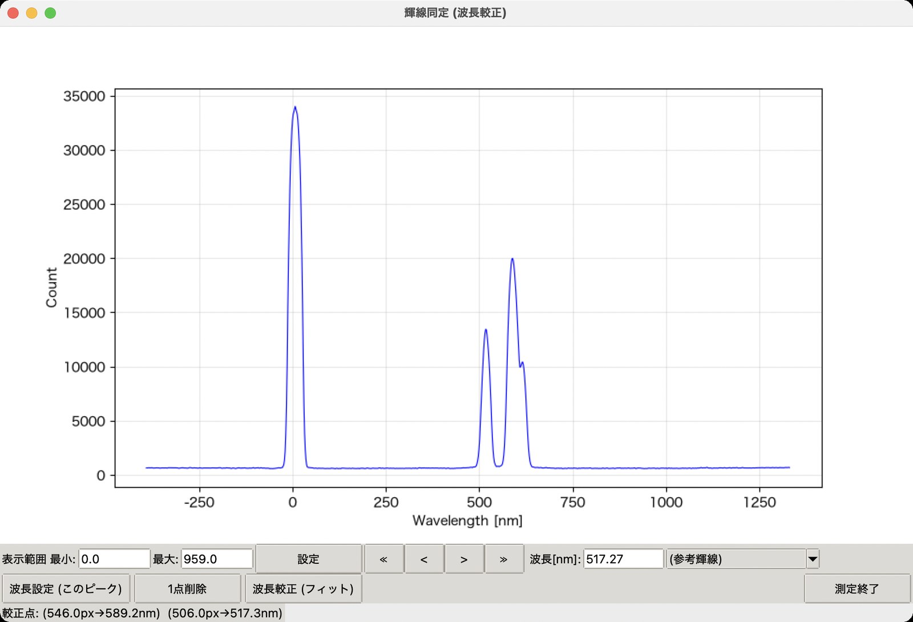
較正が完了すると、フィッティング式・一次近似式・0 次光位置 x0・較正点一覧・RMS 残差が波長較正タブに表示され（図16）、解析ログにも記録されます。RMS 残差が波長分解能より明らかに大きい場合は、輝線の同定ミスや較正点の追加を検討してください。
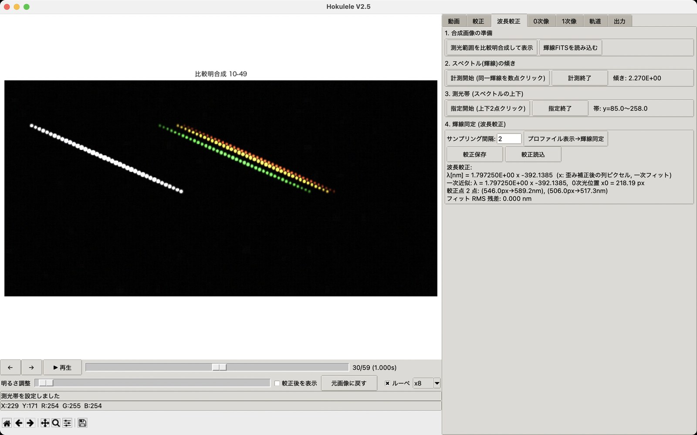
※ 画面例はサンプル動画のため 2 点（一次式）で較正しています。実データでは 4 点以上を推奨します。「較正保存 / 較正読込」で較正結果を再利用できます（形式 [a, b, c, lin_a, lin_b]）。
5.4 0次像タブ
流星本体（0 次像）を自動追跡し、開口測光で光度曲線を求めます。
必要に応じて追跡パラメータ（探索半径・開口半径・背景内径/外径・最小SNR）を調整します。
「開始フレームで位置をクリック」を押すと測光範囲の開始フレームが表示されるので、流星本体をクリックします（図17の水色 ×）。ルーペで中心を正確に狙えます。
「位置確定」を押すと初期位置が右側に表示されます。
「追跡+測光を実行 (測光範囲)」を押すと、重心追跡＋線形予測で自動追尾します。追跡結果はオレンジの軌跡で表示され、検出数が表示されます（図18）。
「光度曲線を表示」でネットカウントと機械等級の時間変化を確認します（図19）。
「テキスト保存」で zeroorder_lightcurve.txt を出力します。
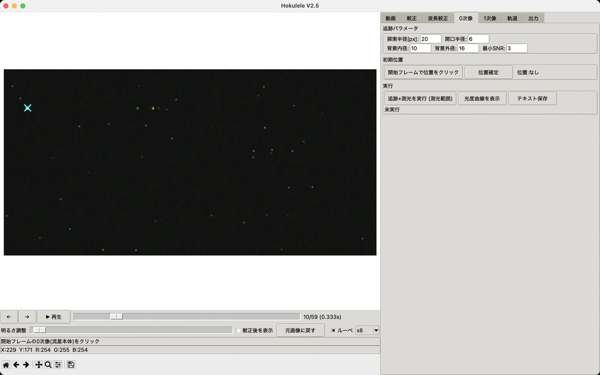
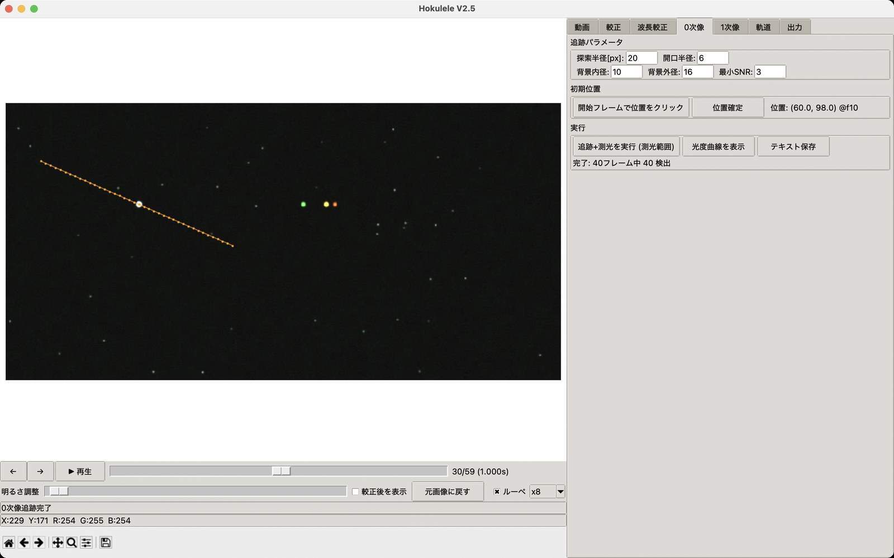
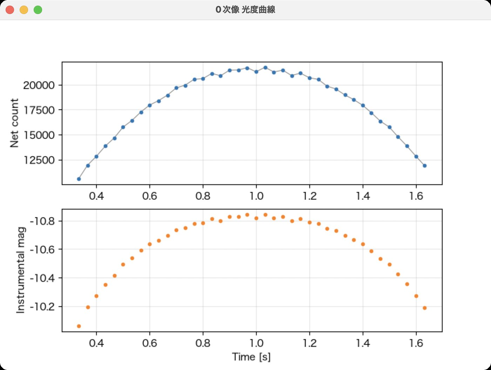
5.5 1次像タブ（スペクトル / フィルター測光）
感度曲線の較正方式
スペクトルのカウント値を相対強度へ変換する方式を、使用するグレーティングに合わせてラジオボタンで選択します。
| 方式 | 対象・内容 | 入力データ |
|---|---|---|
入射角補正 (厚みのあるグレーティング) |
画角内の位置によって回折効率が変わる格子用。入射角別の感度曲線を角度間で線形補間 | 「フォルダ設定」で指定。ファイル名は「入射角[deg].txt」（例 0.0.txt, 30.0.txt） |
同一感度曲線 (シートグレーティング) |
入射角依存が小さい格子用。1 本の感度曲線を全画角に共通適用 | 「ファイル選択」で [波長(nm) 相対感度] の 2 列テキスト（4 列 [波長 R G B] も可） |
| 感度補正なし | カウント値をそのまま強度に使用（カラーは R+G+B 合算）。予備解析・輝線確認用 | 不要。波長範囲は既定 300〜1100 nm |
測光設定と実行
分散方向が右から左である: 入射角の正負を反転します。
負のカウントを0に切り捨てる: V0.971 / V2.3 と同じ処理にします。既定は OFF です（低 S/N では、切り捨てると強度が正に偏るため）。
カウント値で出力する: 感度補正なしの [波長, R, G, B]（感度曲線作成用）を出力します。波長最小/最大の入力が必要です。
0次像トラックに追従する: フレームごとに 0 次光位置に合わせて波長原点をシフトして抽出します（要: 0次像追跡）。
フィルター選択: Johnson-Cousins U B V R I / SDSS u g r i z から複数選択可。「カスタムフィルター読込」で [波長nm 透過率] テキストも追加できます。
「測光開始 (フレーム毎スペクトル+バンド測光)」を押すと、完了時に出力先が表示されます（図20）。「バンド光度曲線を表示」でバンド別の光度曲線と平均スペクトルを確認できます（図21）。
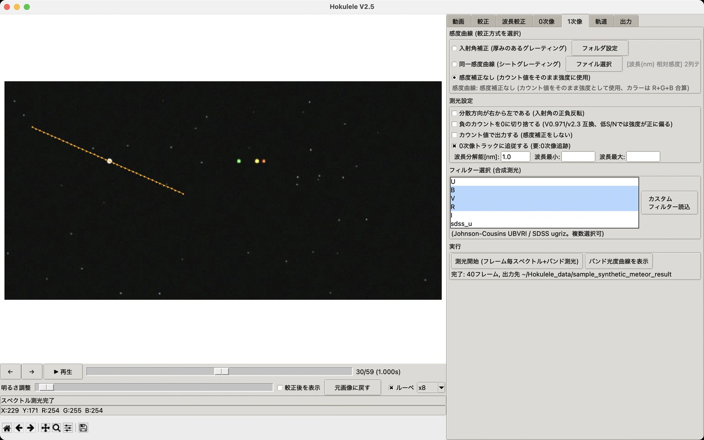
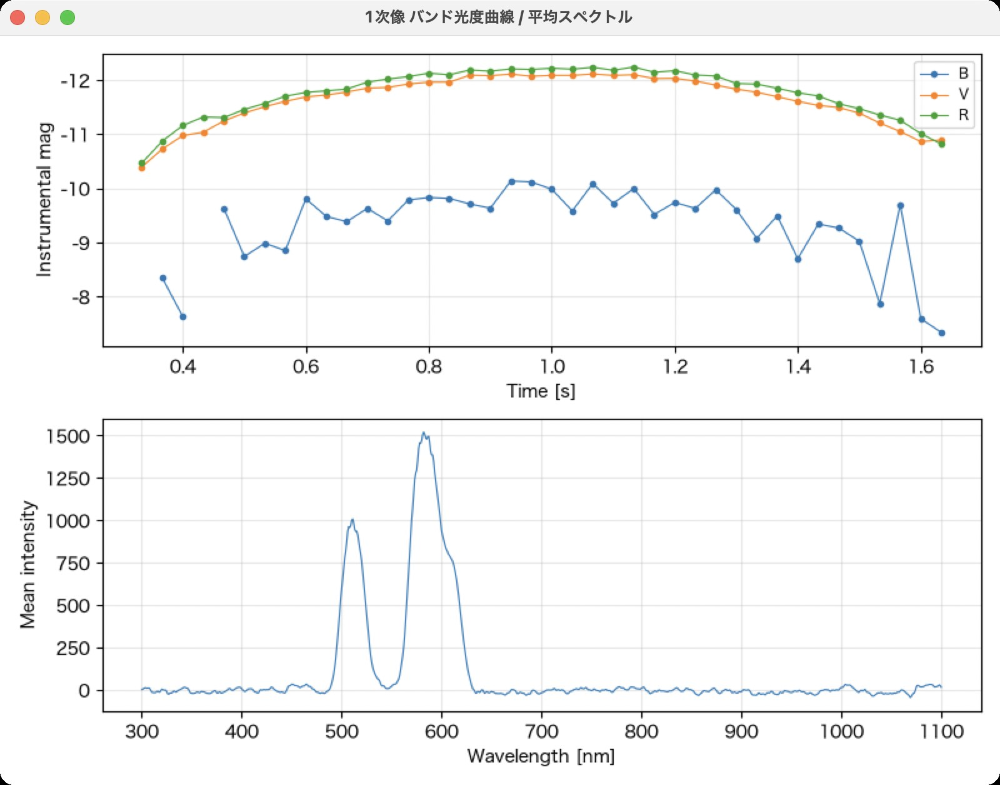
※ 等級は機械等級（-2.5 log10 flux）です。絶対等級への較正には標準星による零点決定が別途必要です。
5.6 軌道タブ
0次像追跡の結果と WCS（恒星マッチング）から、見かけ放射点・対地速度・日心軌道要素を推定します。
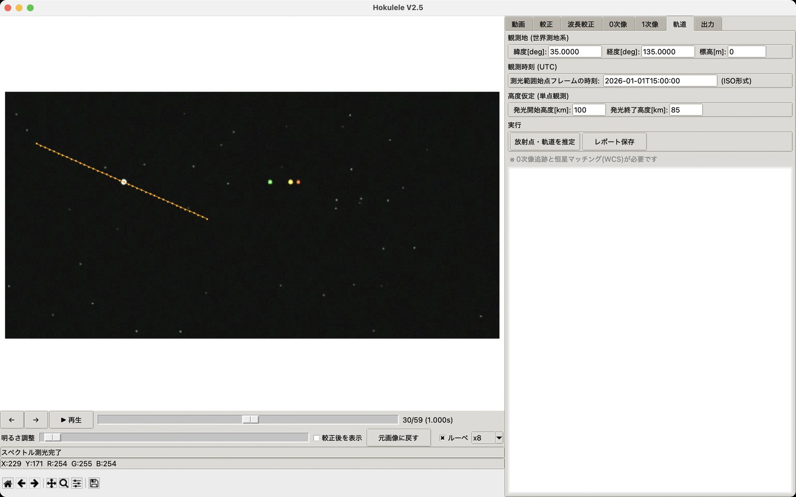
必要条件: 0次像追跡の実行済み、WCS 取得済み（恒星マッチングまたは WCS 読込）。
入力: 観測地の緯度・経度・標高、測光範囲始点フレームの UTC 時刻（ISO 形式, 例 2026-01-01T15:00:00）、発光開始/終了高度の仮定値（既定 100 / 85 km）。
「放射点・軌道を推定」で結果が下のテキスト欄に表示されます: 見かけ放射点 / 自転補正後 / 地心放射点（RA, Dec）、観測速度・v∞・vg・日心速度、軌道要素 a, e, q, i, Ω, ω。
「レポート保存」で orbit_report.txt に出力します。
※ 単点観測のため距離と速度は高度仮定に依存します。多点観測がある場合は実測高度を入力してください。
5.7 出力タブ
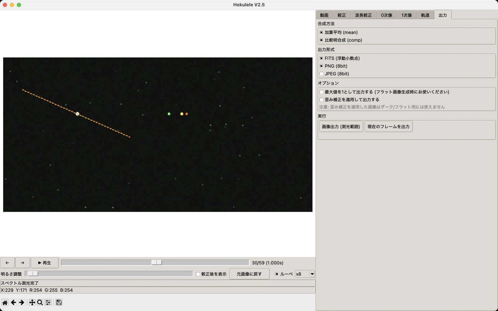
合成方法: 加算平均（mean）/ 比較明合成（comp）。
出力形式: FITS（浮動小数点）/ PNG（8bit）/ JPEG（8bit）。
「最大値を1として出力する」はフラット画像の作成用です。
「歪み補正を適用して出力する」で作った画像はダーク/フラット用には使えません。
「画像出力 (測光範囲)」で測光範囲の合成画像を、「現在のフレームを出力」で単独フレームを出力します。
6. γ補正とカメラ機種対応表
多くのカメラは記録時に階調圧縮（ガンマ／ログカーブ）を施しています。測光にはリニアなカウント値が必要なため、Hokulele は選択されたγ設定の逆変換を全フレームに適用します。
| No. | 設定名 | 逆変換 | 対応カメラ・記録設定の例 |
|---|---|---|---|
| 0 | RAW (科学計測カメラ) | 無補正 | ZWO ASI, QHY, Basler, FLIR, 冷却CCD 等の RAW 出力 |
| 1 | γ=1 (リニア) | 0〜1 に正規化のみ | ガンマ OFF 設定の産業用カメラ、Watec γ=1 |
| 2 | γ=0.35 (Watec LO) | out = in^(1/0.35) | Watec ガンマ LO（WAT-902H2, WAT-910HX 等） |
| 3 | γ=0.45 (Watec HI / NTSC) | out = in^(1/0.45) | Watec ガンマ HI / 多くのアナログ CCD の既定値 |
| 4 | γ=1/1.9 | out = in^1.9 | γ≒1/1.9 の民生ビデオカメラ |
| 5 | γ=1/2.2 (sRGB相当) | out = in^2.2 | 一般デジタルカメラの JPEG / 静止画 |
| 6 | γ=1/2.4 (BT.1886) | out = in^2.4 | BT.1886 基準の映像 |
| 7 | ITU-R BT.709 (HDビデオ) | BT.709 逆 OETF | HD ビデオカメラ標準、Canon EOS 動画、ME20F-SH Normal |
| 8 | S-Log2 (Sony α) | S-Log2 逆変換 | Sony α7S/α7SII/α7III, FS7, FS5 の PP7 |
| 9 | S-Log3 (Sony α/FX) | S-Log3 逆変換 | Sony α7SIII, α7IV, α1, FX3, FX6, FX30 等 |
| 10 | HLG (BT.2100) | HLG 逆 OETF | Sony α の PP10, LUMIX HLG, GoPro HDR 等 |
| 11 | Canon Log (ME20F/EOS) | Canon Log 逆変換 | ME20F-SH Canon Log, EOS R5/R6/R3 C-Log, Cinema EOS |
| 12 | V-Log (Panasonic) | V-Log 逆変換 | LUMIX GH5/GH5S/GH6, S1/S1H/S5, BGH1 等 |
実効ガンマは機種・ファームウェア・ピクチャープロファイルで変わります。上表は目安です。
Sony α: PP OFF/スチル系 → No.5〜7、PP7 → No.8、PP8/PP9 → No.9、PP10 → No.10。
8bit 記録の Log 映像は暗部の階調が粗く、逆変換後に量子化ノイズが強調されます。可能なら 10bit 以上で記録してください。
γ設定を変更したら必ず「設定」を押してください。較正キャッシュが破棄され以降の解析に反映されます。
7. 出力ファイル一覧
解析結果は「保存先/動画名_result/」フォルダに出力されます。
| ファイル名 | 内容 |
|---|---|
| zeroorder_lightcurve.txt | 0次像光度曲線: frame, time, x, y, count, bg, SNR, mag, RA, Dec, R, G, B |
| spectrum_#####.txt | フレーム毎スペクトル [波長nm, 強度]（カウントモードでは R, G, B） |
| spectrum_mean_st-en.txt | 測光範囲の平均スペクトル |
| band_lightcurve_<filt>.txt | フィルター合成バンド測光: frame, time, flux, mag_inst, coverage |
| orbit_report.txt | 放射点・速度・軌道要素レポート |
| <name>_mean / comp .fits/.png/.jpg | 加算平均 / 比較明の合成スペクトル画像 |
| <name>_settings.json | プロジェクト設定（保存場所は任意） |
| analysis_log.txt | 解析結果ログ（自動追記） |
7.1 解析結果ログ（analysis_log.txt）
主要な操作が自動的に追記されます。動画を開くたびに新しいセッションとして区切られ、動画情報、ガンマ・ダーク・フラット・歪み補正、回折格子の傾き、波長較正式と RMS 残差、感度曲線情報、0次像追跡、スペクトル測光、軌道推定、画像出力の記録が時刻付きで残ります。
7.2 較正データの互換性
歪み係数ファイル（[k1, k2, k3, ff]）と感度曲線フォルダ形式は V0.971 と互換です。
波長較正の保存形式は [a, b, c, lin_a, lin_b]（V2 独自）です。
設定 JSON は V2.2 / V2.3 のものをそのまま読み込めます。
8. FAQ・トラブルシューティング
Q1. ルーペが表示されない
「ルーペ」チェックが ON か、動画が読み込まれているか確認してください。マウスが画像領域外にあると自動的に隠れます。L キーでも切り替えられます。
Q2. ショートカットが効かない
文字入力欄にフォーカスがあると無効です。画像やスライダーをクリックしてから操作してください。
Q3. どのガンマ設定を選べばよいか分からない
第 6 章の対応表を参照してください。不明な場合は、視野内の恒星について等級と log カウントの直線性を各設定で比較し、最も直線的な設定を採用するのが実用的です。
Q4. 恒星マッチングが失敗する
恒星が十分写っているか（比較明合成を推奨）、視野の目安が実際と大きくずれていないか、API キーとインターネット接続を確認してください。数十秒〜数分かかります。
Q5. 軌道推定の結果が不自然
UTC 時刻・観測地座標の入力ミス、fps の誤設定、高度仮定のずれが主な原因です。
Q6. 動画が開けない
OpenCV が対応しないコーデックの可能性があります。AVI (MJPEG) や MP4 (H.264) に変換してください。16bit データは連番画像で読み込んでください。
Q7. 「別の処理が実行中です」と表示される
読み込み・追跡・測光などのバックグラウンド処理の完了を待ってから操作してください。進捗はステータスバーに表示されます。
Q8. 感度曲線の方式はどれを選べばよいか
シートグレーティングは「同一感度曲線」、厚みのあるグレーティング（ブレーズド格子など）は「入射角補正」、感度曲線がまだ無い予備解析は「感度補正なし」を選びます。
Q9. Windows で「PC が保護されました」と表示される
コード署名をしていないために表示されます。「詳細情報」→「実行」を押してください。
Q10. macOS で「開発元を確認できない」と表示されて開けない
「システム設定」→「プライバシーとセキュリティ」の「このまま開く」を押してください（2.4 節）。
Q11. 英語（または日本語）で表示したい
メニューバーの「言語 / Language」で切り替え、再起動してください（2.6 節）。
Q12. デモで「デモ情報を取得できませんでした」と表示される
インターネット接続を確認してください。一度ダウンロードしたことがあれば、オフラインでも保存済みのデータでデモを実行できます。
付録
付録A. 流星スペクトルの主要輝線
| 輝線 | 波長 [nm] | 輝線 | 波長 [nm] |
|---|---|---|---|
| Ca II K | 393.37 | Fe I (15) | 526.95 |
| Ca II H | 396.85 | O I | 557.73 |
| Ca I | 422.67 | Na I D | 589.16 |
| Fe I (42) | 430.79 | N2 (1PG) | 650.0 付近 |
| Fe I (41) | 441.51 | Hα | 656.28 |
| Mg I (2) | 448.11 | N I | 746.83 |
| Mg I b | 517.27 | O I | 777.42 / 844.64 |
付録B. 更新履歴
| 版 | 内容 |
|---|---|
| V0.971 (2021/04) | ffmpeg による動画展開、γ補正 10 種、チャート歪み計測、スペクトルテキスト出力 |
| V2.0 (v1.0) | OpenCV 直接読込、恒星マッチング、0次像自動追跡＋開口測光、UBVRI/SDSS 合成測光、放射点・軌道推定、FITS/PNG/JPEG 出力 |
| V2.1 (v1.1) | ルーペ、γ補正のカメラ機種名と HLG / Canon Log / V-Log 追加、ショートカット、プレビュー再生、経過時刻表示、設定 JSON |
| V2.2 (v1.2) | 感度曲線の較正方式選択（3 方式）、解析結果ログ、波長較正式の表示とヘッダ保存 |
| V2.3 (v1.3) | 本体を hokulele/ パッケージ（複数モジュール）へ再構成。機能・操作・結果は v1.2 と同一 |
| V2.5.1 | アイコンを変更（しし座・流星の0次像/1次像・流星スペクトル） |
| V2.5 | 日本語 / English の表示切替、配布先を nu-sx/hokulele に変更、英語版マニュアル |
| V2.4.1 | 使用マニュアルを V2.4 の画面で更新、引用文献と謝辞の例を追記、分光解析デモの説明文の誤りを修正 |
| V2.4 | Windows 11 / macOS 版の公開、分光解析デモ、負のカウントを既定で切り捨てない、歪み係数ファイル・感度曲線チャンネル切替・入射角の修正、グラフの日本語表示 |
付録C. モジュール構成（V2.5.1）
| モジュール | 役割 |
|---|---|
| constants | 定数・輝線リスト・フィルター透過曲線・ガンマ設定 |
| gamma | カメラガンマ補正 |
| distortion | Brown 歪みモデル・天球座標ユーティリティ |
| calib_io | ダーク/フラット画像の読み込み |
| frame_source | 動画/連番画像フレームソースと較正パイプライン |
| astrometry | astrometry.net によるプレートソルブ |
| tracker | 0次像の自動追跡・開口測光 |
| spectrum | スペクトル抽出・波長較正・感度補正・フィルター測光 |
| orbit | 放射点・対地速度・軌道要素の推定 |
| output | FITS/PNG/JPEG/テキスト出力 |
| utils | GUI 用の小さなヘルパー |
| gui_wavecal | 波長較正（輝線同定）ウィンドウ |
| demo | 分光解析デモ用データの取得（GitHub からダウンロードして保存） |
| gui_demo | 分光解析デモのウィンドウ |
| i18n / i18n_en | 表示言語の切替と英訳の対応表 |
| gui_app | メイン GUI（HokuleleApp）とエントリ関数 main() |